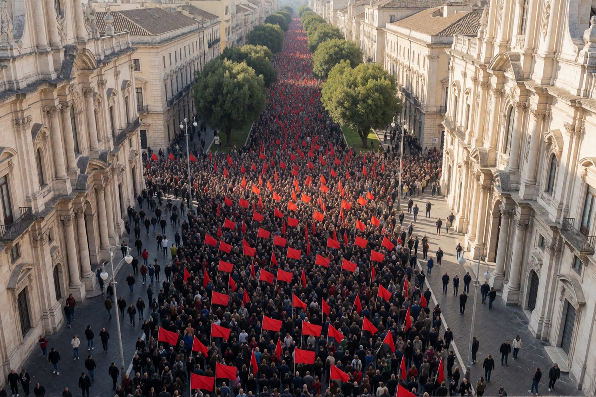

Sicilia · 20 novembre 2026
Sciopero generale, la Cgil conta oltre 150 mila persone in Sicilia

Cortei in nove città dell'isola, con una partecipazione massiccia degli studenti. Il segretario regionale Alfio Mannino attacca il governo nazionale e quello della Regione. In Italia la Cgil parla di un milione e mezzo di persone in oltre 100 piazze.
di Franco Zanghì
Oltre 150 mila persone in piazza in Sicilia: è il dato della Cgil per la giornata di venerdì 20 novembre, quella dello sciopero generale indetto dal sindacato contro la manovra del governo.
Come scrive l'ANSA, ci sono stati cortei nelle principali città dell'isola — la Cgil ne ha organizzati in 9 — con una partecipazione massiccia degli studenti delle scuole.
Mannino: «Non siamo la periferia rassegnata»
A parlare, dalla manifestazione di Catania, è stato il segretario generale della Cgil Sicilia, Alfio Mannino. Per lui lo sciopero e la partecipazione alle manifestazioni non sono «una semplice protesta ma una grande mobilitazione democratica per il futuro di tutti noi».
Mannino ha contestato le politiche del governo nazionale, ha chiesto che lo sviluppo del Mezzogiorno diventi una priorità e ha attaccato quella che chiama l'inadeguatezza politica del governo regionale. «Non sono solo mancate le politiche per lo sviluppo», ha aggiunto, «ma il governo ci ha anche sottratto risorse». E ha concluso: «Noi non siamo la periferia rassegnata di un Paese in crisi».
I cortei
A Palermo il corteo è partito da piazza Marina, ha attraversato via Roma fino a piazza Castelnuovo e si è chiuso in piazza Verdi con il comizio finale. In prima fila tanti ragazzi: la Rete studentesca Palermo ha ricordato che in queste settimane più di 20 scuole della città si sono mobilitate e hanno occupato i propri spazi, per denunciare problemi strutturali e ambienti inadeguati. «Vogliamo riprenderci il presente», hanno detto.
Nelle stesse ore un secondo corteo, con circa 100 manifestanti, è partito da piazza Crispi, nell'ambito di una manifestazione promossa dall'Usb.
Il quadro nazionale
La giornata siciliana è una parte di una mobilitazione nazionale. In serata la Cgil ha parlato di un milione e mezzo di persone in oltre 100 piazze e di un'adesione allo sciopero del 60 per cento; il segretario generale Maurizio Landini, da Roma, ha detto che il sindacato non si fermerà. Sono cifre del sindacato, non verificate da fonti indipendenti, e il governo non le ha confermate.
Il punto
Oltre 150 mila in piazza in Sicilia secondo la Cgil, cortei a Palermo, a Catania e in altre sette città, tanti studenti. E un attacco a due governi insieme, quello di Roma e quello della Regione: è la novità politica della giornata siciliana.
Fonti
- ANSA, «Sciopero generale: Cgil, in 150 mila in piazza in Sicilia», 20 novembre 2026, ore 11:41
- ANSA, «Cgil: un milione e mezzo in oltre 100 piazze, adesione sciopero al 60 per cento», 20 novembre 2026
- Cgil, «Landini: oltre un milione di persone in 100 piazze», 20 novembre 2026
- Gazzetta del Sud, «Sciopero Cgil 20 novembre, i cortei a Palermo, Catania e Messina: orari e percorsi città per città», 17 novembre 2026
- Giornale di Sicilia e La Sicilia, le cronache dei cortei nell'isola, 20 novembre 2026
I dati sulla partecipazione e sull'adesione allo sciopero sono quelli diffusi dalla Cgil alla data di pubblicazione e non sono confermati da fonti indipendenti.